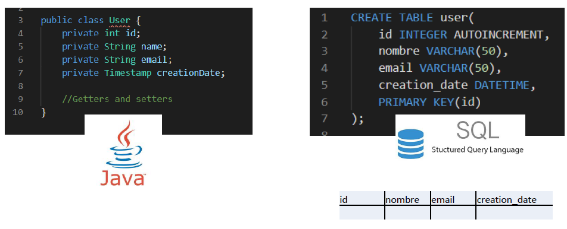
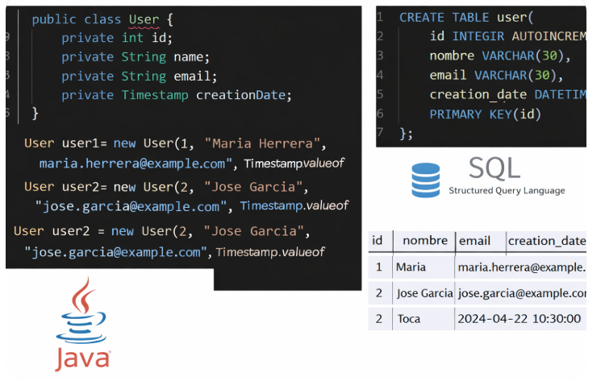

Persistencia de datos: Hibernate¶
Introducción¶
Cuando una aplicación termina, todos sus objetos y datos desaparecen de la memoria, lo que hace que el trabajo realizado se pierda. Para evitar esto, debemos buscar una solución que permita salvaguardar de forma duradera, normalmente en disco, todos los datos. De esta manera, estarán disponibles la próxima vez que volvamos a ejecutar dicha aplicación.
La técnica que permite guardar los datos y que perduren en el tiempo, a través de la terminación y nueva ejecución de una aplicación, se conoce como persistencia.
Existen dos formas de llevar a cabo la persistencia, es decir, dos políticas para guardar y recuperar los datos de una aplicación:
- Mediante ficheros.
- Utilizando los servicios de un sistema gestor de bases de datos (SGBD).
En la unidad de E/S se introdujeron los conceptos para la persistencia de objetos en ficheros binarios y JSON, por lo que en esta UT nos centraremos en la persistencia utilizando un SGBD.
Objetos Serializables
En Java para aplicar la persistencia a un objeto, éste debe ser serializable. Un objeto es serializable si su clase implementa la interfaz Serializable.
Atributos de Objeto Serializable - Si un objeto contiene atributos que son referencias a otros objetos, estos a su vez deben ser serializables. Todos los tipos básicos Java son serializables, así como los Arrays/ArrayList, String...
- Atributo transient: Un atributo transitorio no se serializa. Utiliza la palabra clave
transientpara indicar a la Máquina Virtual Java que la variable indicada no es parte del estado persistente del objeto.
En el siguiente ejemplo, la clase Cliente tiene dos atributos: el nombre del cliente y la contraseña. El atributo password es transient por lo tanto si se hace una serialización para escribir un objeto Cliente en un fichero solo se escribirá el atributo nombre.
Ejemplo
public class Cliente implements Serializable {
private String nombre;
private transient String password;
public Cliente(String nombre, String password) {
this.nombre = nombre;
this.password = password;
}
}
Persistencia de Objetos en un SGBD.¶
En el tema de E/S, vimos como podíamos serializar objetos en ficheros, pero si tenemos que trabajar con aplicaciones multiusuario con datos en común, tendremos que trabajar con bases de datos.
La persistencia será algo tan sencillo como guardar los objetos de nuestra aplicación en una BD para su posterior recuperación. Aunque existen SGBD orientados a objetos, estos no se encuentran suficientemente extendidos. Es por ello por lo que en este apartado se utilizarán SGBD relacionales.
Para almacenar los objetos en un BD relacional se utiliza la técnica del mapeo objeto-relacional.

Mapeo objeto-relacional.¶
El mapeo objeto-relacional consiste en mapear o vincular cada atributo de una clase con un campo de una tabla en la base de datos. Es decir, convertimos los datos como objeto en un registro de una tabla relacional, y viceversa.
La siguiente imagen muestra cómo la clase User se mapea en una tabla, cada atributo de la clase se almacena en un campo de la tabla. Los tipos deben coincidir o, al menos, ser compatibles. Cada objeto se almacena en un registro. Aquí los datos son los mismos, sólo varía su representación: como objeto en el ámbito de la aplicación y como registro en el ámbito de la base de datos.

Java Persistence API: JPA¶
Introducción¶
Hemos visto cómo se aplica el mapeo objeto-relacional mediante la implementación directa de los métodos CRUD.
En este punto, se utilizará un framework de persistencia, que nos permitirá abstraernos de la complejidad a la hora de implementar estos métodos.
En Java existe multitud de frameworks de persistencia. Java Persistence API (JPA) es una especificación que aúna todas estas implementaciones.
JPA es la especificación de una API que permite persistir los datos de una aplicación en un SGBD relacional y que se encarga, de forma transparente al programador, del mapeo objeto-relacional y de la automatización de las operaciones CRUD.
Internamente JPA utiliza como base JDBC para acceder al SGBD.
Bloque JPA¶
JPA especifica tres grandes bloques:
- La API en sí misma, en el paquete
jakarta.persistence - El lenguaje de consulta JPQL (Java Persistence Query Language) que permite realizar consultas en una base de datos relacional obteniendo colecciones de objetos.
- Los metadatos necesarios para el mapeo objeto-relacional. La configuración de estos metadatos se puede realizar mediante anotaciones (con la forma @anotacion) o mediante un fichero XML.
Anotaciones
| 🧩 Concepto | 📖 Descripción |
|---|---|
| ¿Qué son? | Metadatos que se agregan al código para dar información adicional al compilador o frameworks |
| Sintaxis | Se escriben con @ (ej: @Override) |
| Uso principal | Configuración, validación y automatización de comportamiento |
| Ejemplos comunes | @Override, @Deprecated, @Entity, @Autowired |
| Dónde se usan | Clases, métodos, atributos, parámetros |
| Procesamiento | Compilación, runtime (reflexión) o frameworks |
| Ventaja clave | Reduce configuración externa (XML) y mejora la claridad del código |
@Entity¶
Una entidad no es más que una clase cuyos objetos persistirán en una BD.
Para que una clase pueda convertirse en una entidad debe cumplir:
- Ser un POJO (Plain Old Java Object). Un concepto que quiere especificar una clase simple, que no dependa de un framework en concreto y que no extienda ni implemente nada en especial. Nuestra clase Empleado, con sus atributos, constructores, setters y getters, es un POJO.
- Tener un constructor explícito, sin parámetros.
- No ser una clase interna, debe ser una clase de primer nivel.
- No estar definida como una clase final.
- Implementar la interfaz Serializable.
Cualquier clase que necesitemos persistir tendrá que convertirse en una entidad. Para ello hay que anotarla con @Entity.
@id¶
Toda entidad necesita un único atributo que actúe como identificador (que será utilizado en la BD como clave en la tabla). El atributo identificador se anota con @Id.
import jakarta.persistence.Entity;
import jakarta.persistence.Id;
import java.io.Serializable;
@Entity //anotación de entidad
public class Empleado implements Serializable {
@Id //anotación de identificador único
private String dni; // el dni identificará cada empleado
private String nombre;
private double sueldo;
private int oficina; // número de la oficina en la que trabaja
private String puesto; // qué ocupa: Gerente, Informático, etc.
// Constructor sin parámetros. Es habitual que esté vacío.
public Empleado() { }
public Empleado(String dni, String nombre, double sueldo, int oficina,
String puesto) {
this.dni = dni;
this.nombre = nombre;
this.sueldo = sueldo;
this.oficina = oficina;
this.puesto = puesto;
}
/*
gets y sets de todos los atributos
*/
}
@GeneratedValue¶
Si queremos que el id se genere automáticamente, JPA puede encargarse de generar y asignar valores distintos al atributo identificador, para ello añadiremos a la anotación @Id la anotación @GeneratedValue.
import jakarta.persistence.Entity;
import jakarta.persistence.Id;
import jakarta.persistence.GeneratedValue;
import java.io.Serializable;
@Entity //anotación de entidad
public class Alumno implements Serializable {
@Id
@GeneratedValue
private int numero;
private String nombre;
private String direccion;
private double notaMedia;
public Alumno() { }
/*
No es necesario asignar un número distinto a cada alumno.
De este trabajo se encargará JPA.
*/
public Alumno(String nombre, String direccion, double notaMedia) {
this.nombre = nombre;
this.direccion = direccion;
this.notaMedia = notaMedia;
}
/*
gets y sets de todos los atributos
*/
}
Clave alternativa¶
Si necesitamos que algún otro campo sea clave alternativa o única, lo indicamos de la siguiente forma:
//clave primaria autogenerada
@Id
@GeneratedValue
private int cod;
// el dni único
@Column(unique = true)
private String dni;
persistence.xml.¶
La unidad de persistencia es el elemento fundamental para configurar el mapeo objeto-relacional, ya que vincula una serie de entidades con una base de datos, lo que permite persistir los objetos de estas entidades en la base de datos especificada.
En un mismo proyecto pueden existir tantas unidades de persistencia como necesitemos y cada una de ellas se identifica mediante un nombre único.
Las unidades de persistencia se definen en un fichero XML llamado persistence.xml y que se ubica en el paquete META-INF. Este fichero tiene una estructura similar a:
<?xml version="1.0" encoding="UTF-8"?>
<persistence ...>
<persistence-unit name="NombreUnidadPersistencia" ...>
<provider>org.hibernate.jpa.HibernatePersistenceProvider</provider>
<class>paquete.Entidad1</class>
<class>paquete.Entidad2</class>
<properties>
<property name="..." value="..." />
<property ... />
...
</properties>
</persistence-unit>
</persistence>
<persistence-unit>: define cada una de las unidades de persistencia de nuestra aplicación. El atributo name asigna el nombre de dicha unidad.
<provider>: implementación que algún fabricante (proveedor) ha construido de la especificación JPA. La elección de un proveedor implica añadir sus librerías a nuestro proyecto. EclipseLink es la implementación más compatible con JPA, mientras que Hibernate es la implementación más extendida en la actualidad y la que utilizaremos en los ejemplos.
<class>: cada una de las entidades vinculadas a esta unidad de persistencia.
<properties>: mediante los pares propiedad/valor de cada etiqueta <property> se configura cualquier aspecto relacionado con la unidad de persistencia. Entre ellos, uno de los más importantes es la conexión a la base de datos.
<?xml version="1.0" encoding="UTF-8"?>
<persistence xmlns="https://jakarta.ee/xml/ns/persistence"
xmlns:xsi="http://www.w3.org/2001/XMLSchema-instance"
xsi:schemaLocation="https://jakarta.ee/xml/ns/persistence
https://jakarta.ee/xml/ns/persistence/persistence_3_0.xsd"
version="3.0">
<persistence-unit name="default">
<!-- Se usa Hibernate como proveedor -->
<provider>org.hibernate.jpa.HibernatePersistenceProvider</provider>
<!-- Entidad Empleado dentro del paquete oficina -->
<class>oficina.Empleado</class>
<properties>
<!-- Se usa el driver JDBC de MariaDB -->
<property name=" jakarta.persistence.jdbc.driver"
value="org.mariadb.jdbc.Driver"/>
<!-- URL de la BD -->
<property name="jakarta.persistence.jdbc.url"
value="jdbc:mariadb://localhost:3306/oficina"/>
<property name="jakarta.persistence.jdbc.user" value="root"/>
<property name="jakarta.persistence.jdbc.password" value=""/>
<!-- Modo de actualización del esquema de la BD -->
<property name="jakarta.persistence.schema-generation.database.action"
value="create"/>
</properties>
</persistence-unit>
</persistence>
create: solo se crean las tablas si estas no existen.
drop: borra las tablas asociadas a entidades de la BD.
drop-and-create: en cada ejecución de la aplicación, se borran las tablas y se crean de nuevo. Esta estrategia es útil cuando probamos nuestra aplicación e insertamos datos repetidos.
none: JPA no construirá las tablas, estas deberán existir en la BD.
Gestor de entidades.¶
Un gestor de entidades (interfaz EntityManager) gestiona una serie de objetos de entidades pertenecientes a una unidad de persistencia, encargándose de persistirlas de forma transparente al programador.
Podemos pensar en un gestor de entidades como una especie de colección en la que es posible añadir o eliminar objetos, que mantiene una caché de todos los objetos de los que es responsable. Al conjunto de objetos que son responsabilidad de un gestor de entidades se les denomina contexto de persistencia.
Un objeto EntityManager no se crea directamente, sino que se obtiene a partir de un objeto EntityManagerFactory, cuya función es simplificar la construcción y configuración de los EntityManager. De esta manera se evita la configuración, entre otras cosas, de la conexión a la base de datos.
EntitityManagerFactory emf;
// elegimos la unidad de persistencia mediante su nombre
emf = Persistence.createEntityManagerFactory("nombreUnidadPersistencia");
EntityManager em = emf.createEntityManager(); //creamos el objeto EntityManager
EntityManager dispone de métodos que permiten gestionar los objetos de los que son responsables. A continuación, se muestran algunos de ellos:
- void clear(): Elimina todos los objetos del contexto de persistencia.
- boolean contains(Object entity): indica si un objeto de una entidad se encuentra ya en el contexto de persistencia.
- void detach(Object entity): elimina la entidad del contexto de persistencia, dejándola desconectada de la base de datos.
- void flush(): sincroniza el contexto de persistencia con la base de datos.
T merge(T entity) : incorpora una entidad al contexto de persistencia, suponiendo que ya existe en la base de datos.- void persist(Object entity): añade una entidad al contexto de persistencia, suponiendo que no existe en la base de datos, lo que obliga a realizar a JPA, en algún momento, un INSERT.
- void refresh(Object entity): actualiza el estado de la entidad con los valores de la base de datos, perdiéndose los últimos cambios.
Transacciones.¶
Cualquier operación que modifique la base de datos tendrá que realizarse dentro de una transacción. La forma de crear una transacción es a partir de un objeto EntityManager:
EntityTransaction tx = em.getTransaction();
Una vez que disponemos del objeto de transacción, podemos realizar las siguientes operaciones: - Comenzar una transacción, mediante el método begin(). - Terminar la transacción con éxito, método commit(), y llevar todos los cambios realizados en las entidades, desde que se comenzó la transacción, a la base de datos. - Deshacer la transacción a su estado original, así como todas las modificaciones realizadas en las entidades, como si nunca hubiera ocurrido nada. Método rollback().
Ejemplo. Almacenamiento en la BD de los objetos de la entidad Empleado.
import jakarta.persistence.EntityManager;
import jakarta.persistence.EntityManagerFactory;
import jakarta.persistence.Persistence;
import jakarta.persistence.EntityTransaction;
public class Main {
public static void main(String[] args) {
EntityManagerFactory emf;
EntityManager em;
EntityTransaction tx;
Empleado e1, e2, e3;
e1 = new Empleado("111A", "Pepe", 1200.5, 1, "Conserje");
e2 = new Empleado("222B", "David", 2500.5, 2, "Gerente");
e3 = new Empleado("333C", "María", 2500.5, 1, "Gerente");
// default es el nombre de la unidad de persistencia
emf = Persistence.createEntityManagerFactory("default");
em = emf.createEntityManager();
tx = em.getTransaction();
tx.begin(); //comenzamos la transacción
em.persist(e1); //persistimos los objetos
em.persist(e2);
em.persist(e3);
tx.commit(); //finaliza la transacción
}
Operaciones CRUD.¶
Tal y como se explicó , CRUD es el acrónimo para Create, Read, Update y Delete.
Create
Significa añadir un objeto al contexto de persistencia y que sus datos se inserten en la base de datos. Hay que tener cuidado, ya que si intentamos persistir un objeto que ya existe en la base de datos (su identificador ya existe en la BD como clave), se generará un error. El método que hace esto de EntityManager es:
void persist(Object obj)
Añade el objeto al contexto de persistencia e inserta en la base de datos, en la tabla correspondiente, un nuevo registro con los datos de dicho objeto.
Read
Lee los datos en la base de datos; con ellos construye un objeto y lo devuelve. La lectura siempre realiza una búsqueda por el identificador del objeto.
Existen dos métodos de EntityManager que hacen esto:
find(), con una pequeña diferencia: mientras find() realiza la lectura de la base de datos en el mismo momento de ser invocada, getReference() no realizará la lectura hasta el momento en el que haga falta. Esto suele ocurrir la primera vez que se accede a algún atributo del objeto. Este mecanismo ahorra tiempo cuando se lee un objeto que finalmente no se usa.
En ambos métodos se especifica de qué entidad queremos leer. Para especificar qué entidad nos interesa, usamos el atributo class, disponible en todas las clases, que devuelve la propia clase. Es decir, si queremos hacer mención a la clase Empleado, se utilizaEmpleado.class en lugar de simplemente Empleado. De esta manera especificamos qué tipo de objeto queremos leer.
La lectura, al no modificar los datos de la BD, no requiere de ninguna transacción.
Update
La actualización no requiere de ninguna atención por parte del programador, ya que cualquier modificación en un objeto del contexto de persistencia de un EntityManager se reflejará en la base de datos cuando finalice la transacción correspondiente mediante un commit().
Hay que señalar que es indistinto cómo un objeto se añade al contexto de persistencia, sea mediantepersist() o find(); en cualquier caso, dicho objeto estará bajo la tutela del gestor de entidades.
Importante
Es importante anotar que JPA no permite modificar el identificador de un objeto. En caso de que necesitemos cambiar su identificación, estaremos obligados a eliminar el objeto y volver a crearlo con los mismos datos, pero con un identificador distinto.
Delete
Al borrar un objeto, ocurren dos cosas:
Los datos correspondientes al objeto se eliminan de la BD.
El objeto sale del contexto de persistencia, con lo cual, la clase EntityManager deja de estar al cargo de dicho objeto.
El método de EntityManager que hace esto es:
void remove(Object obj)
remove() solo puede ejecutarse durante una transacción.
JPQL¶
JPQL son las siglas de Java Persistence Query Language, y es lenguaje de consulta de base de datos de JPA. Está inspirado en SQL y comparten una sintaxis parecida. A diferencia de éste, que devuelve una tabla con los resultados de una consulta, JPQL trabaja con objetos, siendo el resultado de una consulta una lista de objetos.
select¶
A modo de ejemplo, veremos un ejemplo sencillo de una instrucción SELECT. La siguiente sentencia JPQL permite consultar todos los empleados que existen en la BD:
SELECT e FROM Empleado e
Ejemplo. Muestra los empleados que no trabajan en la oficina 11. Ordena la consulta por el sueldo en orden decreciente.
import jakarta.persistence.EntityManager;
import jakarta.persistence.EntityManagerFactory;
import jakarta.persistence.Persistence;
import jakarta.persistence.Query;
import java.util.List;
public class Main {
public static void main(String[] args) {
// Declaración de variables para trabajar con JPA
EntityManagerFactory emf; // Fábrica de EntityManager (se crea una vez)
EntityManager em; // Objeto para interactuar con la base de datos
String jpql; // Cadena con la consulta JPQL
Query query; // Objeto que representa la consulta
// Se crea la fábrica de EntityManager usando la unidad de persistencia "default"
emf = Persistence.createEntityManagerFactory("default");
// Se crea el EntityManager a partir de la fábrica
em = emf.createEntityManager();
// Definición de la consulta JPQL:
// Selecciona todos los empleados cuya oficina NO sea la 11
// y los ordena por sueldo (de menor a mayor por defecto)
jpql = "SELECT e FROM Empleado e WHERE e.oficina != 11 ORDER BY e.sueldo";
// Se crea la consulta a partir del EntityManager
query = em.createQuery(jpql);
// Se ejecuta la consulta y se obtienen los resultados en una lista
List<Empleado> result = query.getResultList();
// Se recorren los resultados obtenidos
for (Empleado x : result) {
// Se muestra por consola el DNI y el sueldo de cada empleado
System.out.println("Dni: " + x.getDni() + "\tSueldo: " + x.getSueldo());
}
// Se cierra el EntityManager (libera recursos)
em.close();
// Se cierra la fábrica (se recomienda hacerlo al final de la aplicación)
emf.close();
}
}
Parametrización¶
Se pueden parametrizar las consultas mediante parámetros posicionales o nominales. Los parámetros posicionales se denotan con el símbolo ?, seguido del número del parámetro. Los parámetros por nombre se denotan con el nombre asignado precedido de dos puntos : Ejemplo. Muestra el listado de todos los empleados que desempeñan cierto puesto y tienen un sueldo superior a uno fijado.
public class Main {
public static void main(String[] args) {
// Declaración de objetos necesarios para trabajar con JPA
EntityManagerFactory emf; // Fábrica de EntityManager
EntityManager em; // Gestor de entidades (interacción con BD)
EntityTransaction tx; // Para gestionar transacciones (no se usa aquí)
String jpql; // Consulta en lenguaje JPQL
Query query; // Objeto que ejecuta la consulta
int resultado; // Variable no usada en este código
Scanner sc = new Scanner(System.in); // Para leer datos por teclado
// Solicitar datos al usuario
System.out.print("Introduce el tipo de puesto del empleado: ");
String tipoPuesto = sc.nextLine();
System.out.print("Introduce el mínimo de sueldo del empleado: ");
int sueldo = Integer.parseInt(sc.nextLine());
// Crear la conexión con la unidad de persistencia
emf = Persistence.createEntityManagerFactory("default");
em = emf.createEntityManager();
// =========================
// 1ª FORMA: Parámetros posicionales (?1, ?2)
// =========================
// Consulta JPQL con parámetros por posición
jpql = "SELECT e FROM Empleado e WHERE e.puesto = ?1 AND e.sueldo >= ?2";
query = em.createQuery(jpql);
// Asignación de valores a los parámetros
query.setParameter(1, tipoPuesto);
query.setParameter(2, sueldo);
// Ejecución de la consulta
List<Empleado> lista1 = query.getResultList();
// Mostrar resultados
System.out.println("\n--- Resultados (parámetros posicionales) ---");
for (Empleado x : lista1) {
System.out.println("Dni: " + x.getDni() + "\tSueldo: " + x.getSueldo());
}
/*
=========================
2ª FORMA: Parámetros con nombre (:parametro)
=========================
El nombre del parámetro NO tiene por qué coincidir
con el nombre de la variable Java.
*/
// Consulta con parámetros nombrados
jpql = "SELECT e FROM Empleado e WHERE e.puesto = :puesto AND e.sueldo >= :cantidad";
// Crear la consulta
query = em.createQuery(jpql);
// Asignar valores a los parámetros
query.setParameter("puesto", tipoPuesto);
query.setParameter("cantidad", sueldo);
// Ejecutar consulta
List<Empleado> lista2 = query.getResultList();
// Mostrar resultados
System.out.println("\n--- Resultados (parámetros con nombre) ---");
for (Empleado x : lista2) {
System.out.println("Dni: " + x.getDni() + "\tSueldo: " + x.getSueldo());
}
// Cerrar recursos
em.close();
emf.close();
sc.close();
}
}
Update y Delete¶
JPQL permite realizar sentencias de actualización o de borrado de objetos. Las consultas de UPDATE y DELETE utilizan el método executeUpdate().
Este método devuelve el número de filas a las que la consulta ha afectado. Estas sentencias implican un cambio en la BD, por lo que necesitan ejecutarse dentro de una transacción.
Ejemplo. Aplicación que asigna a todos los empleados que trabajan de comercial un sueldo de 1500 euros. Posteriormente elimina todos los empleados cuyo sueldo es negativo.
import jakarta.persistence.EntityManager;
import jakarta.persistence.EntityManagerFactory;
import jakarta.persistence.EntityTransaction;
import jakarta.persistence.Persistence;
import jakarta.persistence.Query;
public class Main {
public static void main(String[] args) {
// Declaración de objetos JPA
EntityManagerFactory emf; // Fábrica de EntityManager
EntityManager em; // Gestor de persistencia
EntityTransaction tx; // Control de transacciones
String jpql; // Consulta JPQL
Query query; // Objeto consulta
int resultado; // Número de filas afectadas
// Crear conexión con la unidad de persistencia
emf = Persistence.createEntityManagerFactory("default");
em = emf.createEntityManager();
// =========================
// UPDATE: modificar sueldos
// =========================
// Consulta JPQL para actualizar el sueldo de los empleados "Comercial"
jpql = "UPDATE Empleado e SET e.sueldo = 1500 WHERE e.puesto = 'Comercial'";
// Crear la consulta
query = em.createQuery(jpql);
// Iniciar transacción (OBLIGATORIO en operaciones de modificación)
tx = em.getTransaction();
tx.begin();
// Ejecutar actualización
resultado = query.executeUpdate();
// Confirmar cambios
tx.commit();
// Mostrar número de empleados modificados
System.out.println("Se ha modificado el sueldo de " + resultado + " empleados");
// =========================
// DELETE: eliminar empleados
// =========================
jpql = "DELETE FROM Empleado e WHERE e.sueldo < 0";
// Crear la consulta
query = em.createQuery(jpql);
// Iniciar nueva transacción
tx = em.getTransaction();
tx.begin();
// Ejecutar borrado
resultado = query.executeUpdate();
// Confirmar cambios
tx.commit();
// Mostrar número de empleados eliminados
System.out.println("Se han eliminado " + resultado + " empleados");
// Cerrar recursos
em.close();
emf.close();
}
}
// UPDATE parametrizado
jpql = "UPDATE Empleado e SET e.sueldo = :nuevoSueldo WHERE e.puesto = :puesto";
// Crear consulta
query = em.createQuery(jpql);
// Asignar valores a los parámetros
query.setParameter("nuevoSueldo", 1500);
query.setParameter("puesto", "Comercial");
// Transacción
tx = em.getTransaction();
tx.begin();
// Ejecutar
resultado = query.executeUpdate();
// Confirmar
tx.commit();
System.out.println("Se ha modificado el sueldo de " + resultado + " empleados");
// =========================
// DELETE parametrizado por DNI
// =========================
jpql = "DELETE FROM Empleado e WHERE e.dni = :dni";
query = em.createQuery(jpql);
query.setParameter("dni", "12345678A"); // DNI a eliminar
tx = em.getTransaction();
tx.begin();
resultado = query.executeUpdate();
tx.commit();
System.out.println("Se han eliminado " + resultado + " empleados");
Consultas con nombre: @NamedQuery¶
Es posible asignar un nombre a una consulta, lo que facilita su reutilización, ya que no es necesario escribir el código JPQL una y otra vez. Las consultas con nombre se crean en la propia entidad y se declaran mediante anotaciones.
La anotación @NamedQuery define mediante los parámetros name y query una consulta con nombre en una entidad.
En el caso en el que necesitemos más de una consulta con nombre en la misma entidad, estas se anotarán con @NamedQueries que define un array de @NamedQuery.
@Entity // Indica que esta clase es una entidad JPA (tabla en la BD)
@NamedQueries({
// Consulta para obtener todos los empleados
@NamedQuery(
name = "Empleado.todos",
query = "SELECT e FROM Empleado e"
),
// Consulta para obtener empleados por puesto (usa parámetro nombrado)
@NamedQuery(
name = "Empleado.puesto",
query = "SELECT e FROM Empleado e WHERE e.puesto = :puesto"
),
// Consulta para contar empleados agrupados por puesto
@NamedQuery(
name = "Empleado.numeroEmpleadosXPuesto",
query = "SELECT e.puesto, COUNT(e) FROM Empleado e GROUP BY e.puesto"
)
})
public class Empleado implements Serializable {
// Atributos, constructores, getters y setters...
}
La forma de usar una consulta con nombre sería:
public class Main {
public static void main(String[] args) {
EntityManagerFactory emf = Persistence.createEntityManagerFactory("default");
EntityManager em = emf.createEntityManager();
Query query;
// =========================
// 1. Consulta: todos los empleados
// =========================
// Se ejecuta la NamedQuery "Empleado.todos"
query = em.createNamedQuery("Empleado.todos");
// Se obtienen todos los empleados
List<Empleado> lista1 = query.getResultList();
// Se recorren y muestran
for (Empleado e : lista1)
System.out.println(e);
// =========================
// 2. Consulta: empleados por puesto
// =========================
// Se ejecuta la NamedQuery con parámetro
query = em.createNamedQuery("Empleado.puesto");
// Se asigna valor al parámetro :puesto
query.setParameter("puesto", "Informático");
// Se obtienen resultados
List<Empleado> lista2 = query.getResultList();
// Mostrar resultados
for (Empleado e : lista2)
System.out.println(e);
// =========================
// 3. Consulta: número de empleados por puesto
// =========================
query = em.createNamedQuery("Empleado.numeroEmpleadosXPuesto");
/*
Esta consulta devuelve DOS valores:
- e.puesto (String)
- COUNT(e) (Long)
Por eso NO se usa List<Empleado>, sino List<Object[]>
donde cada posición del array contiene un campo
*/
List<Object[]> lista3 = query.getResultList();
// Recorrer resultados
for (Object[] x : lista3) {
// x[0] → puesto
// x[1] → número de empleados
System.out.println("Puesto " + x[0] + ": " + x[1] + " empleados");
}
// Cerrar recursos
em.close();
emf.close();
}
}